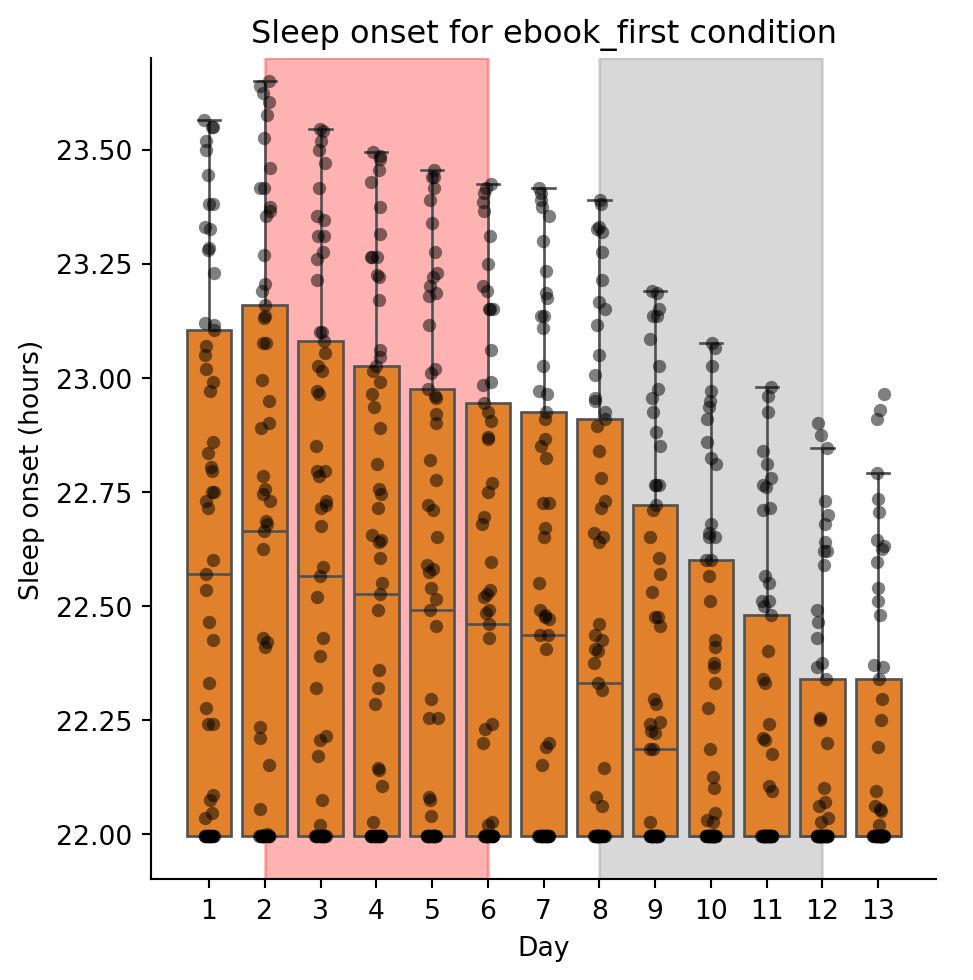

we select only those with a sleep duration that is greater than 6.5 hours, leaving us with 61 parameter sets. The distribution of sleep duration is shown below:
Code
# histogram of sleep sleep time from selected parameterssleep_time = selected_parameters['sleep_time']plt.hist(sleep_time, bins=20, rwidth=0.8)xticks = np.linspace(6.5, 8.0, 7)plt.xticks(xticks)plt.xlabel('Sleep duration (hours)')plt.ylabel('Count')# Add annotation for the number of selected parametersplt.annotate(f'N = {selected_parameters.shape[0]}', xy=(7.85, 8))plt.show()
For each of these parameter sets, we simulate the model under three light schedules: - Regular - Chang14 with eBook on the first week (book on the second week) - Chang14 with eBook on the second week (book on the first week)
We can analyze the sleep onset for each simulation condition:
C:\Users\tavel\AppData\Local\Temp\ipykernel_3296\3439049030.py:14: UserWarning:
No artists with labels found to put in legend. Note that artists whose label start with an underscore are ignored when legend() is called with no argument.
<Figure size 672x480 with 0 Axes>

<Figure size 672x480 with 0 Axes>
<Figure size 672x480 with 0 Axes>
As expected the regular condition has no change in sleep onset across days (it does between different simulations). For the Chang14 light schedule, we see that the sleep onset varies over the two weeks. When the eBook is on the first week (days 2-6), sleep onset remains relatively constant for that first week. However when reading is done with a book (days 8-12), the sleep onset starts to decrease. On the contrary, when the eBook is on the second week, sleep onset starts to decrease at first (book reading), and then increases (eBook reading).
There are many parameter sets that have a regular sleep onset that is close or equal to 22 hours (time the lights go off). Those sets tend to have little to no change when simulated under the Chang14 light schedules:
Code
# for each idx, calculate the avg and std sleep onset for each simulation condition (average across days)sleep_onset_data = simulation_features.groupby(['idx', 'simulation_condition']).agg({'sleep_onset': ['mean', 'std']}).reset_index()regular_data = sleep_onset_data[sleep_onset_data['simulation_condition'] =='regular']ebook_first_data = sleep_onset_data[sleep_onset_data['simulation_condition'] =='ebook_first']ebook_second_data = sleep_onset_data[sleep_onset_data['simulation_condition'] =='ebook_second']# plot regular mean vs ebook_first stdplt.plot(regular_data['sleep_onset']['mean'], ebook_first_data['sleep_onset']['std'], 'o', alpha=0.5, color='tab:blue')plt.plot(regular_data['sleep_onset']['mean'], ebook_second_data['sleep_onset']['std'], 'o', alpha=0.5, color='tab:blue')plt.xlabel('Regular schedule sleep onset')plt.ylabel('Stdev of sleep onset across days')plt.show()
Difference in sleep onset between book and ebook days
As in [@chang2014sleep], we plot the sleep latency (sleep_onset - 22.0) for each reading condition on the last day of reading:
So I think I know the reason for these plots, the sleep homeostat only feeds back to the circadian state by changing the light the model receives. Given that we force it to be awake when theres light, theres actually no change in light schedule for each simulation and that causes the circadian state to be the same for each simulation. >